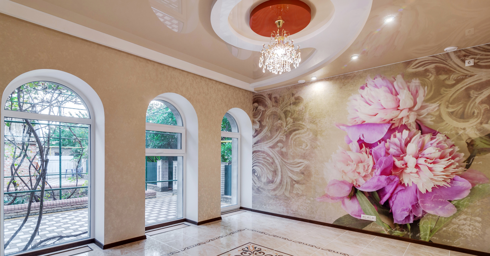

натяжные потолки
с фотопечатью
с фотопечатью
Интерьер помещения для многих стал важной и нужной составляющей. Простой типовой ремонт интересен узкой категории населения, большинство же предпочитает сделать у себя дома что-то необычное, интересное и новое. Такие же вопросы возникают и у предпринимателей, которым для успешного бизнеса важно поддерживать офис в надлежащем виде.
Для того, что бы придать помещению изюминку, сделать его более воздушным и интересным, можно использовать натяжные потолки. Эта относительно новая технология, которая позволяет установить специальный материал на каркас, который под воздействием горячей температуры натягивается и имеет вид идеально ровной поверхности.
Важно отметить, что фактура такого потолка может быть разной, это:
Глянцевое покрытие;
Матовые натяжные полотки;
Покрытие из сатина;
Полупрозрачный материал для натяжного потолка.
Каждая из фактур имеет свои особенности и подходит для определенного помещения. Потолок, выполненный таким образом, может быть еще и различных цветов. Для придания интерьеру колорита, заказчик может выбрать для себя тон, в который будет окрашен материал для потолка.
Кроме этого, можно заказать еще и натяжные потолки с фотопечатью. С появлением специального оборудования стало возможным совершать печать фотографий и различных рисунков прямо на будущий потолок. Бесшовные натяжные полотки с фотопечатью смотрятся очень эффектно и смогут преобразить любую комнату, как жилую, так и офисного типа.
Для тех, кто ранее не сталкивался с такого рода услугами, сообщаем, что картинку или фото можно выбрать прямо на сайте в галерее. Среди предложенных вариантов указаны примеры с высоким качеством и расширением, которые не потеряют четкость при печати для комнаты большого размера. Если у вас есть свое видение интерьера или фотография, которую бы вы хотели видеть на новом потолке, можно предоставить ее самостоятельно, и мы воплотим любые ваши желания. Графический объект должен иметь высокое разрешение и четкость.
Декорировать пространство таким образом можно в самых разнообразных помещениях, вы можете заказать:
Натяжной потолок с фотопечатью в кухню, что бы создать неповторимую атмосферу и уют;
Натяжной потолок с фотопечатью в спальню, для романтической обстановки;
Натяжной потолок с фотопечатью в детскую, что бы ваш малыш развивал свое воображение и мог часами любоваться на потолочное полотно, придумывая что-то интересное.
Натяжной потолок с фотопечатью в офисе, что выгодно выделит ваше рабочее место, сделав обстановку уютной и непринужденной и в то же время необычной.
Цены на услуги фотопечати у нас разные, зависят они от наполняемости полотна. Фотография может занимать все потолочное пространство, а может лишь отдельные его части. Какой бы варианты вы не выбрали, ценовая политика нашего сайта вас порадует. С нами работает все регионы Украины, заказывая потолки разного размера и с различными рисунками. Качество продукции у нас стабильно высокое. Если вас заинтересовала идея натяжного потолка с изображением, обращайтесь к нам и результат вас порадует!
Для того, что бы придать помещению изюминку, сделать его более воздушным и интересным, можно использовать натяжные потолки. Эта относительно новая технология, которая позволяет установить специальный материал на каркас, который под воздействием горячей температуры натягивается и имеет вид идеально ровной поверхности.
Важно отметить, что фактура такого потолка может быть разной, это:
Глянцевое покрытие;
Матовые натяжные полотки;
Покрытие из сатина;
Полупрозрачный материал для натяжного потолка.
Каждая из фактур имеет свои особенности и подходит для определенного помещения. Потолок, выполненный таким образом, может быть еще и различных цветов. Для придания интерьеру колорита, заказчик может выбрать для себя тон, в который будет окрашен материал для потолка.
Кроме этого, можно заказать еще и натяжные потолки с фотопечатью. С появлением специального оборудования стало возможным совершать печать фотографий и различных рисунков прямо на будущий потолок. Бесшовные натяжные полотки с фотопечатью смотрятся очень эффектно и смогут преобразить любую комнату, как жилую, так и офисного типа.
Для тех, кто ранее не сталкивался с такого рода услугами, сообщаем, что картинку или фото можно выбрать прямо на сайте в галерее. Среди предложенных вариантов указаны примеры с высоким качеством и расширением, которые не потеряют четкость при печати для комнаты большого размера. Если у вас есть свое видение интерьера или фотография, которую бы вы хотели видеть на новом потолке, можно предоставить ее самостоятельно, и мы воплотим любые ваши желания. Графический объект должен иметь высокое разрешение и четкость.
Декорировать пространство таким образом можно в самых разнообразных помещениях, вы можете заказать:
Натяжной потолок с фотопечатью в кухню, что бы создать неповторимую атмосферу и уют;
Натяжной потолок с фотопечатью в спальню, для романтической обстановки;
Натяжной потолок с фотопечатью в детскую, что бы ваш малыш развивал свое воображение и мог часами любоваться на потолочное полотно, придумывая что-то интересное.
Натяжной потолок с фотопечатью в офисе, что выгодно выделит ваше рабочее место, сделав обстановку уютной и непринужденной и в то же время необычной.
Цены на услуги фотопечати у нас разные, зависят они от наполняемости полотна. Фотография может занимать все потолочное пространство, а может лишь отдельные его части. Какой бы варианты вы не выбрали, ценовая политика нашего сайта вас порадует. С нами работает все регионы Украины, заказывая потолки разного размера и с различными рисунками. Качество продукции у нас стабильно высокое. Если вас заинтересовала идея натяжного потолка с изображением, обращайтесь к нам и результат вас порадует!
тканевые ролеты
с фотопечатью
с фотопечатью
Каждому человеку важно иметь жизненное пространство, где он может чувствовать себя уютно и комфортно. С появлением большого количества многоэтажек, которые иногда располагаются одна за другой, получить заветный комфорт не представляется возможным, потому как, выглянув в окно, можно наблюдать жизнь людей соседнего дома. Для того, что бы ваша собственная жизнь была доступна только вам, можно использовать различные меры:
Повесить шторы и гардины. Вариант уютный и всем хороший, но не открывать шторы днем не получиться, а через гардину зачастую все хорошо видно с улицы;
Использовать жалюзи. Удобно, но пропускная способность солнечного света у них не слишком высокая, что не подойдет для темных комнат; Использование тканевых ролет. Относительно новый вариант, который позволяет подобрать ролеты нужно цвета, фактуры и дизайна, что бы в помещении было достаточно светло, но при этом была возможность спрятаться от внешнего мира.
Сами по себе тканевые ролеты известны достаточно давно, но ранее они имели достаточно скучный вид, были однотонными и фактурные вариации были очень скромные. Сейчас же есть возможность разнообразить интерьер используя тканевые ролеты с рисунком. Варианты рисунков можно посмотреть на нашем сайте, и подобрать тот, который придется по душе. Существует возможность печати любого рисунка, который вы пожелаете, главное, что бы он имел хорошее качество.
Еще одной возможностью создать оригинальный интерьер являются тканевые ролеты с фотопечатью. Наша компания предлагает широкий ассортимент такой продукции с самыми различными изображениями. Варианты рисунка формирует спрос, на который мы ориентируемся, но любое пожелание клиента без труда можно выполнить.
Создавая свой неповторимый антураж, индивидуальный вид помещения, вы в силах подобрать именно тот рисунок или фотографию, которая больше всего будет отвечать поставленной задаче. Такие ролеты могут служить замечательным подарком, если вы знаете о необходимости такой детали вашему родственнику или другу. Хорошо они впишутся и в рабочую обстановку, если вы их закажите для офисного помещения.
Заказать и приобрести тканевые ролеты любой сложности и с изобилием рисунков можно как в Запорожье, так и в любом городе Украины. У нас вы получите высокое качество и приемлемые цены, хорошее обслуживание и индивидуальный подход к каждому клиенту.
Повесить шторы и гардины. Вариант уютный и всем хороший, но не открывать шторы днем не получиться, а через гардину зачастую все хорошо видно с улицы;
Использовать жалюзи. Удобно, но пропускная способность солнечного света у них не слишком высокая, что не подойдет для темных комнат; Использование тканевых ролет. Относительно новый вариант, который позволяет подобрать ролеты нужно цвета, фактуры и дизайна, что бы в помещении было достаточно светло, но при этом была возможность спрятаться от внешнего мира.
Сами по себе тканевые ролеты известны достаточно давно, но ранее они имели достаточно скучный вид, были однотонными и фактурные вариации были очень скромные. Сейчас же есть возможность разнообразить интерьер используя тканевые ролеты с рисунком. Варианты рисунков можно посмотреть на нашем сайте, и подобрать тот, который придется по душе. Существует возможность печати любого рисунка, который вы пожелаете, главное, что бы он имел хорошее качество.
Еще одной возможностью создать оригинальный интерьер являются тканевые ролеты с фотопечатью. Наша компания предлагает широкий ассортимент такой продукции с самыми различными изображениями. Варианты рисунка формирует спрос, на который мы ориентируемся, но любое пожелание клиента без труда можно выполнить.
Создавая свой неповторимый антураж, индивидуальный вид помещения, вы в силах подобрать именно тот рисунок или фотографию, которая больше всего будет отвечать поставленной задаче. Такие ролеты могут служить замечательным подарком, если вы знаете о необходимости такой детали вашему родственнику или другу. Хорошо они впишутся и в рабочую обстановку, если вы их закажите для офисного помещения.
Заказать и приобрести тканевые ролеты любой сложности и с изобилием рисунков можно как в Запорожье, так и в любом городе Украины. У нас вы получите высокое качество и приемлемые цены, хорошее обслуживание и индивидуальный подход к каждому клиенту.

фотообои
Затевая ремонт, многие задумываются над тем, что именно они бы хотели видеть у себя на стенах. Благодаря развитию технологий, сейчас существует большое разнообразие обоев, которыми можно оклеить помещение. Выбор вариантов чаще всего зависит от функциональности комнаты, где они будут наклеиваться и финансовых возможностей.
Одним из наиболее интересных и креативных вариантов обоев, которые есть в настоящее время, являются фотообои. Если ранее можно было купить бумажные обои с каким-то определенным рисунком для создания особого интерьера, то теперь палитра вариантов стала куда более широкой. На выбор покупателю предоставлены такие варианты, как:
Бесшовные фотообои, где нет стыков, не нужно подбирать рисунок и бояться того, что при наклеивании смеситься какая-либо деталь общей картины;
Широкие фотообои, которые позволяют одним полотном наклеить весь рисунок, упрощая процедуру и ускоряя сам процесс ремонта;
Обои с арт печатью, где вы можете подобрать текстуру обоев, и на них при помощи цифровой печати нанести выбранный вами рисунок.
Что бы вы не выбрали, но качество фотообоев, представленных на нашем сайте одно из наиболее высоких. Вы сможете подобрать именно то, что хотите и сделать интерьер жилого или офисного помещения неповторимым. Варианты принта фотообоев может быть самым разным, это и цветы, и природные ландшафты, города и их достопримечательности, знаменитости и прочее.
Если же в предоставленном каталоге так и не нашлось того, что нужно, можно сделать индивидуальный заказ, и это уже будет интерьерная фотопечать. Наша компания успешно предоставляет такие услуги и помогает реализовать мечты миллионов жителей Украины. Обои такого плана экологичны, они подходят даже для детской. Родители, которые желают сделать по-настоящему уникальную детскую комнату, успешно пользуются данной возможностью. В качестве рисунка может быть фотография или объект, который дорог кому-то из членов семьи. Вы можете сделать настоящий подарок родным, подобрав нужную картинку.
Заказав фотообои у нас, вы сможете порадовать себя качественным продуктом по приемлемым ценам. Печать на обоях это уже не признак роскоши, а лишь возможность сделать свой дом таким, каким видит его каждый из членов семьи, угодить вкусам и предпочтениям от самого старшего, до младшего. Каждую комнату можно оформить интересно и стильно, преимущество фотообоев в том, что их можно подобрать и вписать в любой интерьер, или же отталкиваясь от них, придумать и сформировать новый.
Одним из наиболее интересных и креативных вариантов обоев, которые есть в настоящее время, являются фотообои. Если ранее можно было купить бумажные обои с каким-то определенным рисунком для создания особого интерьера, то теперь палитра вариантов стала куда более широкой. На выбор покупателю предоставлены такие варианты, как:
Бесшовные фотообои, где нет стыков, не нужно подбирать рисунок и бояться того, что при наклеивании смеситься какая-либо деталь общей картины;
Широкие фотообои, которые позволяют одним полотном наклеить весь рисунок, упрощая процедуру и ускоряя сам процесс ремонта;
Обои с арт печатью, где вы можете подобрать текстуру обоев, и на них при помощи цифровой печати нанести выбранный вами рисунок.
Что бы вы не выбрали, но качество фотообоев, представленных на нашем сайте одно из наиболее высоких. Вы сможете подобрать именно то, что хотите и сделать интерьер жилого или офисного помещения неповторимым. Варианты принта фотообоев может быть самым разным, это и цветы, и природные ландшафты, города и их достопримечательности, знаменитости и прочее.
Если же в предоставленном каталоге так и не нашлось того, что нужно, можно сделать индивидуальный заказ, и это уже будет интерьерная фотопечать. Наша компания успешно предоставляет такие услуги и помогает реализовать мечты миллионов жителей Украины. Обои такого плана экологичны, они подходят даже для детской. Родители, которые желают сделать по-настоящему уникальную детскую комнату, успешно пользуются данной возможностью. В качестве рисунка может быть фотография или объект, который дорог кому-то из членов семьи. Вы можете сделать настоящий подарок родным, подобрав нужную картинку.
Заказав фотообои у нас, вы сможете порадовать себя качественным продуктом по приемлемым ценам. Печать на обоях это уже не признак роскоши, а лишь возможность сделать свой дом таким, каким видит его каждый из членов семьи, угодить вкусам и предпочтениям от самого старшего, до младшего. Каждую комнату можно оформить интересно и стильно, преимущество фотообоев в том, что их можно подобрать и вписать в любой интерьер, или же отталкиваясь от них, придумать и сформировать новый.
модульные картины
Для того, что бы создать неповторимый интерьер, нужно подобрать все составляющие так, что бы они гармонично сочетались и дополняли друг друга. Кроме того, важно дополнить помещение особенными деталями, которые выгодно его подчеркнут, сделают необычным и оригинальным.
Одним из таких вариантов являются модульные картины. Это картина большого размера, иногда занимающая большую часть стены и имеющая специально подобранный рисунок. Чаще всего декорирование не заканчивается одной такой картиной, модульные картины представляют собой от трех и более кусочков одного изображения или частей, составляющих единый образ. Печатают их на холсте высокого качества, который натягивают на подрамник.
Размещать такие декоративные элементы можно: В гостиной, где будет собираться основная масса жителей данного помещения и смогут длительное время наслаждаться таким дизайном; В кухне, если ее габариты позволяют вписать столь объемную фигуру в интерьер; В спальне, при условии правильного подбора изображения на модульной картине, что бы она успокаивала и вдохновляла, а не постоянно обращала на себя внимание; В офисном помещении, что придаст уют и стиль комнате.
Для модульных картин может применяться интерьерная фотопечать, что бы правильно и точно подобрать изображение на холсте и удачно вписать арт объект в пространство. Сделать такие картины можно у нас на сайте на заказ или подобрать из имеющихся вариантов представленных в галерее. Вариантами дизайна могут быть цветочные композиции, деревья, освещенные солнечным светом или тонированные в разных цветах, архитектурные объекты и подобные им.
Преимущество таких декоративных элементов в том, что за ними можно скрыть огрехи стен или обоев, которые иногда могут появиться в комнате. Кроме того, удачно подобранное цветовое решение позволит сделать пространство более легким и просторным или же придаст ему теплую и уютную атмосферу, в зависимости от ваших пожеланий.
Купить такие картины можно как в Запорожье, так и заказать доставку по всей Украине. Если вы хотите порадовать дорого вам человека, то подарок модульной картины будет наиболее подходящим вариантом. В качестве изображения можно заказать даже ваши фотографии. Это замечательный подарок ко Дню Рождения или восьмому марта. Наша компания поможет вам придумать, составить и реализовать любой проект, для того чтобы порадовать вас и дорогих вам людей в любом уголке нашей страны.
Одним из таких вариантов являются модульные картины. Это картина большого размера, иногда занимающая большую часть стены и имеющая специально подобранный рисунок. Чаще всего декорирование не заканчивается одной такой картиной, модульные картины представляют собой от трех и более кусочков одного изображения или частей, составляющих единый образ. Печатают их на холсте высокого качества, который натягивают на подрамник.
Размещать такие декоративные элементы можно: В гостиной, где будет собираться основная масса жителей данного помещения и смогут длительное время наслаждаться таким дизайном; В кухне, если ее габариты позволяют вписать столь объемную фигуру в интерьер; В спальне, при условии правильного подбора изображения на модульной картине, что бы она успокаивала и вдохновляла, а не постоянно обращала на себя внимание; В офисном помещении, что придаст уют и стиль комнате.
Для модульных картин может применяться интерьерная фотопечать, что бы правильно и точно подобрать изображение на холсте и удачно вписать арт объект в пространство. Сделать такие картины можно у нас на сайте на заказ или подобрать из имеющихся вариантов представленных в галерее. Вариантами дизайна могут быть цветочные композиции, деревья, освещенные солнечным светом или тонированные в разных цветах, архитектурные объекты и подобные им.
Преимущество таких декоративных элементов в том, что за ними можно скрыть огрехи стен или обоев, которые иногда могут появиться в комнате. Кроме того, удачно подобранное цветовое решение позволит сделать пространство более легким и просторным или же придаст ему теплую и уютную атмосферу, в зависимости от ваших пожеланий.
Купить такие картины можно как в Запорожье, так и заказать доставку по всей Украине. Если вы хотите порадовать дорого вам человека, то подарок модульной картины будет наиболее подходящим вариантом. В качестве изображения можно заказать даже ваши фотографии. Это замечательный подарок ко Дню Рождения или восьмому марта. Наша компания поможет вам придумать, составить и реализовать любой проект, для того чтобы порадовать вас и дорогих вам людей в любом уголке нашей страны.
рекламные баннеры
С развитием торговли и предоставлением разного рода услуг населению сильно выросла конкуренция, что заставило предпринимателей искать пути решения данной проблемы. Для того, что бы привлечь внимание к своему товару или услугам начали использовать рекламу. Вариантами рекламы могут быть:
Сюжет по телевидению о компании или ее товарах;
Радио реклама продукции;
Рекламные баннеры и брендволы.
Телевидение охватывает наибольшую аудиторию, но и стоимость таких услуг высокая. Вариант продвижения услуг по радио менее востребован, но также достаточно дорогой. Рекламный баннер существенно отличается от вышеупомянутых вариантов. Его можно нанести на различные поверхности и поместить в разных местах. Это может быть рекламный щит в городе, вывеска над дорогой, и подобные варианты.
Брендвол же имеет немного более узкую специализацию. На нем обычно размещают логотип одной или нескольких фирм, для раскрутки. Обычно брендвол имеет вид большой конструкции по типу искусственной стены, чаще всего белого цвета, что бы лучше было видно содержание. Логотипы наносятся с определенной частотой, что бы глазу было легко их прочесть и запомнить.
Организации стараются поместить такую рекламную стену на всех массовых мероприятиях, начиная от танцевальных клубов, заканчивая спортивными соревнованиями. Расчет в этом случае на массовость. Это хороший вариант оформления любого события, когда идет популяризация определенного вида деятельности и параллельная реклама продукции определенного бренда. Зачастую компании заказывают услуги фотографа, который делает снимки всех желающих на фоне брендвола, что повышает ажиотаж и далее идет скрытая реклама. Фото, выложенное в сети, на социальных страницах дает возможность определенному кругу пользователей увидеть рекламное послание и запомнить его.
Рекламные банеры и брендволы можно заказать в Запорожье. Качество работы нашей компании очень высокое, а сроки выполнения максимально быстрые. Поскольку сотрудничество производится с любым городом Украины, то каждая фирма и организация, не зависимо от ее величины и рода деятельности, может заказать у нас данную продукцию. Мы предоставляем широкий спектр вариантов оформления рекламы, как цветового, так и материала, на котором будет производиться печать. Разнообразие услуг выделяет нашу компанию из ряда подобных, что поднимает уровень доверия к нам.
Сюжет по телевидению о компании или ее товарах;
Радио реклама продукции;
Рекламные баннеры и брендволы.
Телевидение охватывает наибольшую аудиторию, но и стоимость таких услуг высокая. Вариант продвижения услуг по радио менее востребован, но также достаточно дорогой. Рекламный баннер существенно отличается от вышеупомянутых вариантов. Его можно нанести на различные поверхности и поместить в разных местах. Это может быть рекламный щит в городе, вывеска над дорогой, и подобные варианты.
Брендвол же имеет немного более узкую специализацию. На нем обычно размещают логотип одной или нескольких фирм, для раскрутки. Обычно брендвол имеет вид большой конструкции по типу искусственной стены, чаще всего белого цвета, что бы лучше было видно содержание. Логотипы наносятся с определенной частотой, что бы глазу было легко их прочесть и запомнить.
Организации стараются поместить такую рекламную стену на всех массовых мероприятиях, начиная от танцевальных клубов, заканчивая спортивными соревнованиями. Расчет в этом случае на массовость. Это хороший вариант оформления любого события, когда идет популяризация определенного вида деятельности и параллельная реклама продукции определенного бренда. Зачастую компании заказывают услуги фотографа, который делает снимки всех желающих на фоне брендвола, что повышает ажиотаж и далее идет скрытая реклама. Фото, выложенное в сети, на социальных страницах дает возможность определенному кругу пользователей увидеть рекламное послание и запомнить его.
Рекламные банеры и брендволы можно заказать в Запорожье. Качество работы нашей компании очень высокое, а сроки выполнения максимально быстрые. Поскольку сотрудничество производится с любым городом Украины, то каждая фирма и организация, не зависимо от ее величины и рода деятельности, может заказать у нас данную продукцию. Мы предоставляем широкий спектр вариантов оформления рекламы, как цветового, так и материала, на котором будет производиться печать. Разнообразие услуг выделяет нашу компанию из ряда подобных, что поднимает уровень доверия к нам.
Закажите обратный звонок и наш менеджер свяжется с вами
Получить дилерский прайс